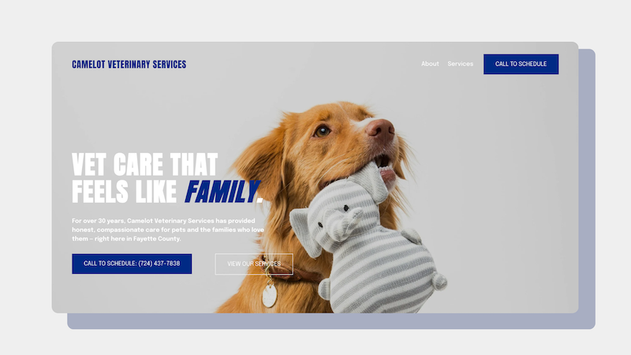

Camelot Vet Services

Web UX | Client project | Ongoing | 2026
A small veterinary practice was preparing to switch phone providers and needed texting to transfer on the same day as voice. Using my onboarding experience, I led strategy, UX direction, and 10DLC compliance to deliver a compliant website in time to support a seamless transition.
View Live Site →Problem
👉 Patients can't be reached by text until a live compliance site exists.
Camelot Vet Services lost its website and digital infrastructure. When onboarding to Weave, the clinic could not complete 10DLC registration without a compliant website with SMS consent language, blocking all patient communication by text.
Solution
A focused, four-page website designed to launch quickly and meet 10DLC compliance requirements.
Key Decision
👉 Preserve the clinic's existing trust signals.
Clinic’s Google listing showed 4.7 stars across more than two hundred reviews, many mentioning the doctor and staff by name. The website highlights the listing and uses real reviews to reinforce trust and set expectations for new pet owners.
Discovery: Minimal input, clear direction
A 20-minute call revealed clear priorities despite minimal input.
Questions that shaped direction
- What are your most important or profitable services?
- Who are your typical clients?
- What makes your service different from other vets in your area?
What mattered
👉 The clinic’s Google Business profile, with 4.7 stars and more than two hundred reviews, became a key asset to preserve and build on.
- Surgery emerged as the most important service.
- The clinic operates as a small private practice with a personalized approach, drawing patients from multiple states.
- The client had no clear design direction and limited assets, so I relied on experience to move forward with minimal input.

Strategy: Compliance First
From onboarding similar businesses, I knew a compliant four-page site was enough to meet 10DLC requirements and hit the April 17 deadline. The focus was on proving business legitimacy, not building features like booking or click to text.
Page Structure
Four-page MVP designed to meet compliance requirements and launch quickly.

Color
With no design direction from the client, I used Pennsylvania state colors to establish a simple and grounded visual system. During review, the client shared that Dr. Shepherd is color blind and can clearly see blue, making the choice an unexpected but strong fit.

Final: MVP delivered
A compliant four-page site delivered in time to support the April 17 transition.

Outcome: Deadline met, system enabled
👉 Met the April 17 deadline to switch phone providers, enabling the clinic to begin texting patients without interruption.
- 10DLC Terms & Conditions page in place to enable carrier registration.
- Content grounded in the clinic’s real differentiator - its people.
- Scope held to MVP, keeping the launch fast and maintenance low.
Next: Improve mobile experience
With 10DLC registration completed, the next focus is improving the mobile experience.